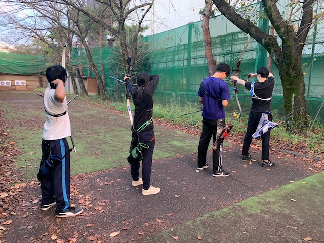
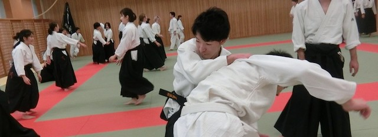
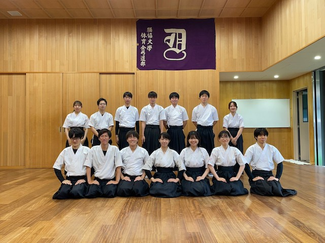
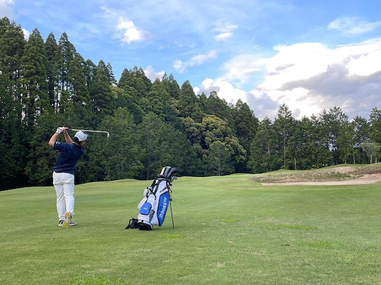
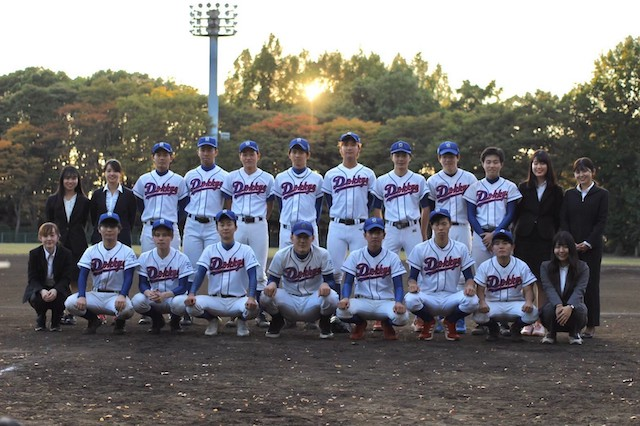
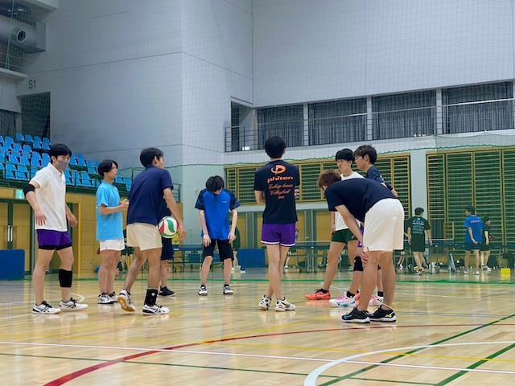
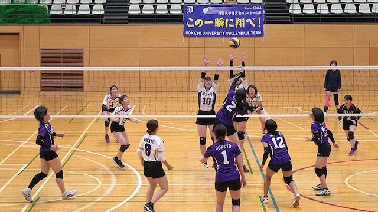
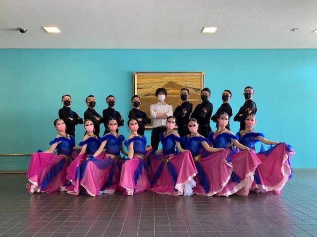

アーチェリー部

アーチェリーは初心者でもコツさえ掴めば上達できるスポーツで、実際にいる部員のほとんどが初心者です！
また、ランニングや過度な筋トレを必要としないので運動に自信がない人や文化系で活躍していた人でも気軽に始められます◎ 経験者はもちろん、初心者も大歓迎です！練習時間に関しても週３回・多くても１日に３時間ほどしか活動しないので、バイトや勉強との両立がしやすいです！更に、練習のスケジュールも個々の時間割に合わせて組むことができるので受けたい授業も我慢せず受講することができます。そして、部員数は周りの部活動やサークルに比べて少人数ですが、その分雰囲気はとてもアットホームでのびのびとした環境で部活動ができます。メンバーは個性豊かで学年を超えて仲が良好です。夏にはみんなで合宿に行ったりしてたくさんの思い出を作ることができますよ！新感覚スポーツアーチェリーにあなたもチャレンジしてみませんか？部員は男女ともに大募集中です！！
【活動日時】 水・土+その他の好きな曜日 平日（15:30～17:30）土 （ 9:00～12:30）
【活動場所】 学内射場
【部費】 隔月1000円
【兼部】 要相談
合氣道部

合氣道とは、開祖である植芝盛平翁が日本伝統の武術の奥義を究め、
さらに厳しい精神修行を経て創始した現代武道です。
特色として、合氣道は競い合うことをしません。お互いの習熟度に合わせて技を繰り出して稽古をし、心身の練成を成すことを目的としています。
合氣道は、他の武道と異なり力をぶつけ合うものではありません。
そのため、筋肉の力を必要とはしません。護身術としても知られているように、
合氣道は、相手の力を導いて投げたり倒したりする武道です。
だから、力に自信の無い人や、女性の方にも無理なく続けられます。
実際、獨協大学合氣道部の部員のうち、約半数は女性です。
さらに言えば、合氣道をやっているうちに、自然と身体が磨き上げられます。
合氣道の技には呼吸法や投技・関節技があり、このような技を日々稽古してゆくことで、柔軟で伸びのある引き締まった身体が形成されてゆくのです。
最後に、合氣道を通して磨き上げられる、その最たるものを紹介しましょう。
それは、「人間」です。
合氣道に限らず、武道をやると自然と礼儀作法が身に付き、また精神の修養になるといいます。その中でも、合氣道ほど人間の形成に向いた武道はないでしょう。
その理由は稽古の中にあります。合氣道の稽古は、基本的には二人一組で行われます。相手の習熟度やペースに合わせて、技を繰り出し合うのです。そのため、自己中心的な技では、相手はおろか自己の成長すら望めません。
これは日常生活においても同じことで、自己中心的な態度では、周りと善い関係を築くことは難しくなってしまいます。合氣道は、技の向上を図るばかりではなく、人間性の向上にも重きをおいているのです。
合氣道を通じ、心身共に成長してまいりましょう。
皆様の入部をお待ちしております。
【活動日時】 月・水（17:40～19:40） 土 （13:15～15:15）
【活動場所】 学生センター4階 天真館
【部費】 月1000円
【兼部】 可
弓道部

こんにちは。體育會弓道部です。
現在弓道部には3年生9人、2年生5人、1年生3人の計17人が在籍しており、学生センター別館2階の弓道場にて火・水・金の17時から稽古を実施しています。
OBの方々や師範のご指導のもと、高校や中学の時から弓道をやっていた経験者、大学から始めた未経験者に関わらず、部員同士切磋琢磨しながら日々稽古に励んでいます！
【活動日時】 水・金・土
【活動場所】 学生センター別館2階 玄至館弓道場
【部費】 月1500円
ゴルフ部

私たちゴルフ部は創部51年の歴史を持つ伝統のある部です。現在監督以下、部員14名で活動しており、大学から徒歩３分の練習場で、週３回の団体練習と、希望者による週末のゴルフコースでのラウンド練習を実施しています。練習時間は自分の履修に合わせて決められるので学業との両立に全く問題はありません。練習場では定額で打ち放題なので、時間があれば部活動以外の時間でもいつでも練習することができます。毎年新入部員の大半は初心者ですが、４月からの３か月みっちり練習すれば夏休みにはコースに出られるレベルになります。クラブを持っていなくても貸しクラブが豊富にありますので心配いりません。女子部員も多くいますので、女子も入りやすいとおもいます。また、ゴルフはお金がかかるイメージがありますが、提携するゴルフ場で無料でのラウンドができ、希望者はキャディーのアルバイトもできます。ゴルフをやりたい人には最高の環境だと思います。獨協大学唯一のゴルフ団体なので、ゴルフをするならここしかありません。ゴルフを通じて、私たちと一緒に学生時代の思い出と一生の友を作りませんか？
【活動日時】 月・水・木、 一回80分を週に3回、 希望制で土日祝日にラウンド
【活動場所】 松原ゴルフガーデン、新千葉カントリー倶楽部
【部費】 月5000円
【兼部】 認めない
軟式野球部

【活動日時】 月・水・金・土・日（土日は練習試合や公式戦がある場合のみ、夏季休業等、長期休みには平日にも試合が あることがあります）
【活動場所】 ダイキングラウンド
【部費】 部員 月1000円
【兼部】 当部活以外の体育会の兼部は不可。愛好会は部活の出席に支障が出ない程度なら兼部可
男子バレーボール部

こんにちは！
男子バレーボール部です。男子バレーボール部は1年生、2年生の若い世代が主体となり活動を行っています。3年生のプレーヤーが居ないので、みんなでアイディアを出し合ってメニューを考え練習し、チームとしての全体的なまとまりを1番に考え、大切にしています。初めは2人しかプレーヤーが居ませんでしたが、現在では10人以上の部員が集まっています。
和気あいあいとした雰囲気でチーム間のチームワークも抜群です！！！
仲良く楽しく私達とバレーボールを楽しみましょう！
【活動日時】 月・水・金（17：00～21：00） 男女で前半後半 土（13：00～17：00）
【活動場所】 35周年記念館アリーナ
【部費】 無料 ※必要時に徴収
【兼部】 可
女子バレーボール部

現在、より上を目指すために私たちは部員を多く募集しています！大学生にもなるとアルバイトや勉強、遊びなど各自の予定が多くなり部活動というものをやる人はどんどん少なくなっているのは事実です。しかし、私たちの部活動は週に３、４日というペースで練習をしており、少しばかりは各自の予定が組みやすくなっている部活動でもあります。そのため、毎日充実した大学生活を送れています！少ない練習時間の中でどうすればより上の舞台へと進むことが出来るのかと考えながら練習するのもまたひとつ魅力があるのではないかと考えています。そこで新入生の力が必要です！男女共に部員数が少ないためより多くの新入生に入部してもらい一緒に紅白戦やゲーム形式などの練習をしたいと考えています！個性の強い方たちが集まっており日々賑やかにバレーボールをしていますが、少しでも気になった方はぜひバレーボール部に足を運んでみてください！何か高校生の時とは違ったひとつの思い出となるようなものを一緒に見つけてみませんか！初心者の方も大歓迎です！マネージャーも募集しています。まずは見学体験だけでも構いません！気軽に練習参加や質問してください！
【活動日時】 月・水・金（17：00～21：00） 男女で前半後半 土（13：00～17：00）
【活動場所】 35周年記念館アリーナ
【部費】 無料 ※必要時に徴収
【兼部】 可
舞踏研究部

私たちは競技ダンスを行っています。舞踏会のようなスタンダードと情熱的なラテンの2つの専攻があり、東部地区や全国地区の大会まで幅広く出場しています。部員の殆どが初心者でありながら毎年全国大会出場できているのは、週二回の全体練習と各ペアでの練習の賜物です。また、部員の温かさも楽しくやりがいのある部活になっている要因の一つです。私たちの活動を知るには、踊っている姿を見ていただくことが一番なので、是非見に来て頂けたらと思います。
【活動日時】 水（15：45～21：00） 土（13：30～21：00） (練習会自体は2時間ほどで、残りの時間は自主練習をしていて、好きな時間に帰れます。)
【活動場所】 学生センター２階黎明ホール（水・土） 35周年記念館アリーナ（土）
【部費】 月1000円（年12000円）
【兼部】 掛け持ち可能
アメリカンフットボール部
私たちはチーム名を『GREEN MONSTERS』と言い、現在プレーヤー47名、スタッフ38名、計85名で活動をして
おります。アメフトというとあまり身近にないので、よく知らない方も多いと思います。「難しそう、痛そう、自分にはできない」と思われがちかもしれません。しかし我が部でも経験者は少なく、ほとんどのプレーヤーが大学に入ってから始めています。皆スタートは同じなので心配は無用です！努力次第で一年生からでも試合で活躍することができます。
そして皆さんの中で抱く最大のイメージは「アメフト＝体格のいい人にしかできない」ということだと思います。しかしポジションによって動きや求めている体格も異なるので、もともとの体格は関係ありません。どなたでも大歓迎です！
また部活動を運営する上ではスタッフのサポートが必要不可欠です。
我が部のスタッフはマネージャーとトレーナーの二つに分かれております。「グラウンドで練習を手伝う仕事」のイメージが強いかと思いますが、それだけではなく一人ひとりに細かく重要な仕事が与えられているので、やりがいがあることには間違いありません！
【活動日時】 火～木（17：45～19：30）土・日 （13：00～17：00）
【活動場所】 本学グラウンド
【部費】 プレイヤー 半期18000円 スタッフ 半期8000円
【兼部】 要相談
空手道部
獨協大学体育会空手道部は公益社団法人日本空手協会と一般社団法人全日本学生空手道連盟に所属しており、今年で創立52年を迎えました。部員数は現在男子３名、女子４名の計７人で、週に４回学生センター天真館で稽古に励んでいます。月曜日と木曜日には、公益社団法人日本空手協会所属の大隅広一郎師範が指導に来てくださります。当空手道部は、現在男子が２部リーグ、女子は１部リーグに所属しており、多くの功績を残しています。部の雰囲気としましては、皆仲が良く、熱心に稽古に励んでいます。やるときはやる、楽しむときは楽しむとメリハリのある部活です。毎年、春季と夏季に合宿も行われています。今年は年に２回開催される、関東学生会定期リーグ戦において、男子は１部昇格、女子は１部優勝を目標としています。厳しい道のりですが、達成した時の喜びはとても大きく、一生の財産になると思います。基本からコツコツと学んでいけば２年ほどで黒帯が取れます。また、空手道を通じて屈強な精神力や協調性が身に付きます。そして、それらは社会に出てからでも役に立ちます。経験者はもちろんのこと、少しでも空手に興味のある方は是非見学に来てください。お待ちしております。
【活動日時】 月・火・木（17：45～19：45） 土 （13：00～15：00）
【活動場所】 学生センター4階天真館
【部費】 一学期5000円
【兼部】 要相談
剣道部
私達、獨協大学剣道部は全日本出場を目指し、神奈川県警察剣道名誉師範である、篠塚増穂先生を師範としてお迎えし、日々充実した稽古に励んでおります。試合に勝つことはもちろんですが、「礼に始まり礼に終わる」と言われるように、人として不可欠である礼儀作法を身につけるべく、「剣道を通じての人間形成」を目標としております。稽古以外では最低限の上下関係はあるものの、先輩後輩分け隔てなく、仲が良く和気あいあいとしているところも剣道部の魅力であります。また、篠塚師範や外部の先生、OBの先輩方が積極的に稽古にいらっしゃる為、教えを乞うにあたっても最良の環境です道場の設備も素晴らしく、洗濯機、乾燥室、シャワー室を完備しており、清々しい気持ちで稽古に臨むことが出来ます。また、剣道部は毎年、北海道で北海道大学様・北翔大学様と共に合同合宿を行い、最終日には地元のお祭に参加しております。技術向上のみならず、他大学との交流並びに地域のボランティア活動にも力を入れております。
大学周辺の剣道普及にも力を入れており、中学生・高校生を交えた地域合同稽古会や、今では関東近辺では有名となっている高校生親善大会などを進んで行っており、部員は社会性も身につける事が出来ます。このように、将来に役立たせる為の経験も積むことができます。また、学生の本分は勉学ですので、勉学に支障をきたすことがないよう活動を行っており、授業と部活が重なっても授業を優先するようにしておりますので、部員は剣道だけでなく勉学にも高い意識を持って大学生活を送ることが出来ることも魅力の一つです。
【活動日時】 月（15：30～17：30）水・金（15：30～18：00）土（10：00～12：30）
【活動場所】 学生センター4階天真館
【部費】 年12000円（月1000円）
【兼部】 部活優先であれば可
硬式庭球部
実力を加味しながら部全体で、より良い部活動を作り上げる為に全員が一丸となりひとつの目標に向かっています。
また、この部活動は真面目で革新的な部員が多く、部活動をやりながら勉強に励んだり、部活動をやりながら将来を見据えたことをやったりとテニス以外にも重きを置いています。
繰り返しにはなりますがテニスの上達だけでなく、より善い人間である事を非常に大切にしている部活動です。
ぜひ一緒にテニスをやりましょう。
【活動日時】 火・水・金・土（3限後～19：00）日（練習試合などがある場合）
【活動場所】 本学テニスコート
【部費】 年12000円
【兼部】 活動に一切の支障をきたさない場合のみ可。
硬式野球部
私たち硬式野球部は部全体で125名という多くの部員がいる中活動しています。グラウンドは大学から少し離れたところに、獨協大学天野貞祐記念球場（越谷グラウンド）があり、天然芝・放送設備・ナイター照明・クラブハウスといった素晴らしい環境が整っている中、選手たちは自分たちが置かれている環境に日々感謝しながら週６日間２部優勝、そして１部昇格に向けて日々精進しています。また部員たちは部活にしっかりと打ち込みながらも資格取得を目指している部員も数多くおり文武両道に向け部活全体で高い意識を持って取り組んでおります。就職活動（インターンシップや企業説明会も含む）においては野球部の活動日でも優先して休むことができます。少しでも硬式野球部に興味を持たれましたらリーグ戦やキャンプなどの様子を掲載しているのでHPおよびFacebookをご覧ください。
▼選手希望の方へ
やる気と熱い気持ちがない選手は受け付けておりません。情熱的な野球男児待っております！
▼マネージャー希望の方へ
現在男子５名、女２名でマネージャー活動を行っています。仕事内容は、リーグ戦運営、日程管理、他大学とのオープン戦の連絡、会計、用具の注文、バスの手配などといったように主に事務的な作業をします。野球のルールを知っている方、経験者大歓迎です！ぜひ興味のある方はご連絡ください！
【活動日時】 火～金 （16：00～20：00） 休日 （9：00～16：00）
【活動場所】 天野貞祐記念球場（越谷グラウンド）
【部費】 年70000円 ※マネージャー、スタッフは35000円
【兼部】 不可
サッカー部
私たちサッカー部は現在埼玉県大学サッカーリーグ１部に所属し、試合に勝つために日々練習しています。基本的に火曜日、水曜日、金曜日の17:30～19:30が練習時間で、土日は午前か午後どちらかの練習もしくは練習試合、リーグ戦をしています。練習時間が多くは確保できない中、それぞれがどうしたら上達するか考えながら日々練習しているので、毎回の練習の活動はとても充実しています。また練習を円滑に効率良く進めるためにはマネージャーのサポートは欠かせません。ELの３つのリーグを戦ってきました。各カテゴリーでそれぞれの選手が活躍し１部は残留、２部は優勝、ELは年間チャンピオンと結果を残すことができました。もちろんプレーだけではなく、リーグ戦を運営するためにチームをサポートしたり、より試合を優位に進めるため自分たちの試合を分析するだけでなく相手チームの試合のビデオも撮り、どのような戦い方をすれば勝てるのかという分析もしています。埼玉県のほかのチームと比べ練習時間が確保できない分、このようにして一回一回の試合でベストを尽くせるようにしています。これらの活動を通して、サッカー選手としても人としても日々成長することができています。
山岳部
こんにちは獨協山岳部です！山岳部と聞いて多くの人は山を思い浮かべるでしょう。しかし私たちは
主に屋内ジムでボルダリングをしています！近年、注目を集めているスポーツクライミングですが、その中でもボルダリングは、室内で４メートルほどの人工壁を自分の四肢のみを使って登るスポーツです。
ボルダリングは性別や経験を問わずに参加でき、初心者でも達成感を味わえます。また、気軽にできる点もボルダリングが人気の理由の一つです。山岳部の部員はほとんどが未経験からのスタートです。
特に女性に人気が高く気軽にエクササイズができて自分のペースで取り組めるので是非オススメです！
また、ボルダリングは他のスポーツと大きく違う点があります。それは相手を打倒するかというところです。
ふつうは得点や直接対決で相手を打倒しますが、ボルダリングはこないだ登れなかったから今日は登りきろうというように過去の自分を打倒するスポーツです。
だから周りの人達も同じ目標に挑戦する仲間なのです！
山岳部は ボルダリング以外にもキャンプやスキーなどの楽しい企画を用意しています。
主な活動はボルダリングジムでのトレーニングになりますが、外で本物の岩を登るロッククライミング、命綱をつけて高さを競うリードクライミングなども行います。
昨年、茨城県で行われたプレ国体では女子学生の部で３位に入賞し初の快挙を達成しました。
基本的には週３回の活動なので、勉強やアルバイトも無理なく行うことができます。
また、強制でもないので自分の予定に合わせることも可能です。
はじめてみたかった！興味があった！という人はぜひ一度お越しください！
【活動日時】 月・水・金
【活動場所】 ボルダリングジム
【部費】 ジム利用料
【兼部】 要相談
自転車部
自転車部は主に個々人の目標に合わせた活動であるため学業と部活動の両立が可能です。水曜日と土曜日には部員全員でトレーニングやツーリングを行っています。年に数回の大会や合宿には参加してもらいますが、基本的には自分のペースで活動することができます。体育会といっても部員の多くはロードバイクの経験がない状態で入部しています。未経験の方でも気軽に入部することができます。「ロードバイクを持っていないから…」と、入部を思いとどまっている方、部の自転車の貸し出しを行っているので心配しなくて大丈夫です！未経験の方も練習すれば結果を残せるようになります。練習は大変でつらいこともありますがその分結果を出せた時や目標を達成できた時は何事にも代えられない達成感を味わうことができます。長距離を走ったり、山を登ったりするので今まで見たことないような景色を見ることができます。大学生になって、何か新しいことを始めてみたい、何かに夢中になってみたいと考えている方、ぜひ私たちと一緒に挑戦しましょう。少しでも自転車に興味のある人、この部活に魅力を感じてくれた人はぜひ一度部室（学生センター407号室）にお越しください。部のSNSのDMなどからの連絡も大歓迎です。ツーリングの予定やお知らせはSNSで行うので部のアカウントのチェックやフォロー、ぜひよろしくお願いします。部員は全員男性ですが、女性で自転車に興味がある方ももちろんお待ちしています。部員大募集中なので皆さんにお会いできるのを楽しみにしています。
【活動日時】 水・土
【活動場所】 平日（江戸川、荒川、彩湖、トレーニングルーム）休日（筑波山、霞ケ浦、横浜、箱根など）
【部費】 なし（大会参加費や合宿費等はすべて自己負担）
【兼部】 部の活動に支障をきたさない範囲であれば可能
柔道部
私たち柔道部は学生センター4階天真館という所で活動しています！現在柔道部はあまり人数が多いとは言えませんが、経験者・初心者ともに分け隔てなく活動しています。柔道部は経験者の方はもちろんですが、初心者の方にも是非入部して頂きたいと思っています。柔道は痛そう辛そう苦しそうというイメージで大学から始めるのはちょっと…と思う方も多いと思います。しかし、獨協大学柔道部は有段者が協力し基礎から指導していくので安心して活動に参加できます。また、柔道で初段を取っておくと公務員（特に警察官）に就職を希望したときに有利になる資格なので就活に活かしたい！という方にもおすすめです。また、先輩・後輩といった上下関係も厳しすぎず和気あいあいとした雰囲気で活動しています。大会に関しては年に2回、団体戦と個人戦の大きな大会があります。しかし、昨年はこれ以外にも市民大会等に出場しています。大学から始めた人でも大会に出場するチャンスは大いにあります。段を取得したい、強くなりたい、大会に出場したいなど個人個人目指す目標が違っても、獨協大学柔道部なら楽しんで活動ができると思います。少しでも興味を持った方、柔道をやってみたいと思う方は是非一度、部室もしくは道場に見学に来てください。また、選手のみならずマネージャーも大募集です！！
【活動日時】 火・木（18：00～20：00） 土（10：00～12：00）
【活動場所】 学生センター4階天真館
【部費】 年3000円
【兼部】 不可
準硬式野球部
私たち準硬式野球部は現在、東都リーグの3部に所属しており、プレーヤー24名、マネージャー5名の計29名で活動しています。今季のリーグ戦では4位という悔しい結果に終わり、来季こそは、2部昇格を果たすために日々練習に取り組んでいます。当部の練習では、監督、コーチはおらず、選手たち自らが主体となって行っています。練習は1週間に3回という限られた時間の中で、自分たちが強くなるために何が必要か、何をすべきか、選手間で話し合いながら取り組んでいます。リーグ戦期間は忙しいですが、ボランティアや留学、アルバイトなど、自分のやりたいことを部活と両立している部員もおり、それが強みです。野球が好きな方でしたら大歓迎です。大好きな野球ができ、お互いを高め合える仲間にも恵まれる、それが準硬式野球部です。獨協大学の学生であれば、誰でも入部できます。選手、マネージャー共に常時募集をしております。入部希望の方は掲示板に書き込みをいただくかメールでご連絡ください。「とりあえず見学だけしたい」という方も大歓迎です。
【活動日時】 週3日(月・水・木 3限後)
【活動場所】 月（越谷グラウンド） 水・木（人工芝グラウンド)
【部費】 年16000円
【兼部】 原則不可
スキー部
学年問わず仲が良く、お互いが切磋琢磨しあえる最高のチームです。
私たちスキー部は23名でスキー班・スノーボード班に分かれ仲良く楽しんで活動しています。広大な雪山を自由にすべり個々のレベルに応じた楽しみ方ができます。静かで空気のきれいな白銀の世界で自由にすべるのは何事にも代えがたいものです。
私たちの部には大学からスキーやスノーボードを始めた部員や、雪国出身ではない部員も多く所属しています。初心者、経験者問わず先輩が一から丁寧にベースづくりの指導をします。先輩の中には大学で初心者としてスタートし優秀な成績を収めている人もいます。初心者・経験者問わず大歓迎です。スキー部には特有の利点があります。スキー・スノーボードというスポーツを通してかけがえのない仲間を作ることができ、OBの方々や大学側からの手厚いサポートをしていただけます。また、プロのコーチの方からオールシーズンで直接指導していただけます。さらに、合宿やレッスン、山籠もりを通して他大学の人と関わることができ多くの人脈を作ることができます。
活動内容として、オフシーズンはインラインスケート（ローラースケート）やスケートボードを使いイメージ、バランストレーニングをしたり、筋トレなどをしたりして身体を動かしています。男女問わず楽しんで取り組めます。シーズンである冬は、冬休み、そして２ケ月間の春休みを使って合宿・検定受験・山籠もり・大会など盛りだくさんです。笑いが絶えない環境の中で面白い仲間たちと最高の想い出を作り、充実した大学生活を送っていきましょう。
【活動日時】
月（15:30~17:30)
木（17:30~19:30）
【活動場所】
35周年記念館アリーナ
スケート部
アイスホッケーは、氷上でスケートをしながら、相手のゴールにスティックを使って円盤状のパックを入れ合い、点数を競うとてもシンプルなスポーツです。試合で一度に出る人数はゴールキーパー１人、ディフェンス２人、フォーワード３人の計６名ですが、アイスホッケーは体力消耗が激しいので選手交代は自由です。ルールもさほど複雑なものではないので初心者でも始めやすいスポーツだと思います。私たち獨協大学スケート部も、現役部員の大半が大学からアイスホッケーを始めています。なので、初心者の皆さんも気軽に体験に来てくださいね！アイスホッケーの魅力は、陸上でのスポーツにはない、氷上ならではのスピード感が味わえることです。選手の動くスピードやシュートの速さはもちろん、攻守の切り替えも早いので、大迫力のプレーを選手も観客も楽しめます。ゲームの展開が早く、最後の0.1秒までどうなるかわからないので、素早い判断が求められるのも魅力の一つです。また、激しい体のぶつかり合いがあることもアイスホッケーの特徴です。アイスホッケーは「氷上の格闘技」と言われているぐらい激しいスポーツで、その迫力は一度見たら引き込まれること間違いないです！冒頭でもお伝えしたとおり、現役部員の大半が大学からアイスホッケーを始めています。仲間と共に新しいスポーツに挑戦してみませんか？また、試合中の入れ替えが多いので、１年生の頃からバンバン試合で活躍できちゃいます！部員一同皆さんの見学、体験をお待ちしています！
【活動日時】 月・木（深夜）
【活動場所】 シチズンアイス スケート場 等
【部費】 月10000円
【兼部】 要相談
ダイビング部
僕がダイビング部に入部したのはささいなきっかけでした。入学式直後の新歓、せっかく大学に入ったのだから何かやりたい、でも何をしようとは決まってない。そんな中声をかけてくれたのがダイビング部でした。
僕はそれまで、スキューバダイビングはおろか、フィン（足ひれ）をつけて海に入ったこともなかったですし、泳ぐのも25mがやっとでした。足がつかないプールに入るのも、波が強い海に入るのもとても怖かった。それでもコーチや先輩方のサポートのもと練習をして、ライセンスも取得できたし、素潜りでも10mぐらいなら潜れるようになりました。しっかりとした練習をするので、お世話になる様々なショップで「獨協の学生さんは上手だね」と褒めていただけるのがとても嬉しいです。
ダイビング部は伝統ある部活です。今年で入部する皆さんは57期になります。コーチの方も元OGですし、先輩方と交流するOB合宿というものもあります。卒業した先輩方もたまに「一緒に潜りに行こう」と誘ってくれるので活動外で潜る機会もたくさんあります。ダイビング部のつながりは、在学している間だけではないのです。
海の中で呼吸をしたことはありますか？綺麗な魚やイルカを目の前で見たことはありますか？海の下から日光があたる海面を見たことがありますか？それらを写真に撮ったことは？
迷っているのであれば僕が新歓でかけてもらった言葉を送ります。「君にぴったりの部活がある！」
【活動日時】 木（プール練習） 金（部会） ※部会は部員の履修によって調整可
【活動場所】 学生センター部室（520） 辰巳国際水泳場 竹ノ塚スイムセンター
【部費】 隔月2000円
【兼部】 本部活を優先できるのであれば
卓球部
卓球部は、関東学生卓球連盟の加盟校のうち、男女ともに３部に所属しています。目標は、男女ともに３部優勝、２部昇格として練習に励んでいます。私たちは、週３日、35周年記念館体育館で練習を行っています。週３日の練習なので、部活がない日にアルバイトをしたり、勉強時間を確保したり、遊びに行ったりすることができます。私たちは、やる気のある１年生を募集しています。入部したい方はもちろん、少しでも興味を持った方は35周年記念館体育館にどうぞ気軽に見学に来てください！
【活動日時】 月・木（17：00～20：00） 土 （13：00～16：30）
【活動場所】 35周年記念館体育館
【部費】 半期3000円
【兼部】 要相談
チアリーディング部
私たちチアリーディング部zephyrsは、他部活の応援、年末に行われる全日本チアリーディング選手権大会、雄飛祭での発表に向けて日々練習しています。部員数も増え、チームスポーツだからこそ、部員みんなで先輩後輩分け隔てなく、和気藹々と活動しています！！しかも！部員のほとんどが初心者で運動部出身でない子もいて経験者はほぼゼロです！！！なので、みんなスタートが同じで基本からゆっくり教えます！みんな仲良く楽しく活動しているので、少しでも興味をもったり、チアやってみたいなと思ったら、ご連絡ください！！！信頼関係の最も大切なチアリーディングというスポーツを通じて一生のかけがえのない仲間をつくりませんか？大学時代に何か仲間と共に頑張ることはきっと今後の将来に沢山の良い影響を与えてくれると思います！みなさん、私たちと一緒にチアスピリットで最高の景色を見ましょう！新入生のみなさん部員一同お待ちしてます!
活動日時 月・水・金（土）
活動場所 35周年記念館アリーナ
部費 ３～４ヶ月分 3000円
兼部 可
軟式庭球部
体育会の部活動なので厳しいのでは？と思う方もいると思いますが、決して厳しいわけでもなく割とマイペースに活動しています。大会前は練習もかなり身が入りますが、それ以外の普段の練習や合宿などはのびのびとやっています。人数があまり多くないので部員同士話す機会が増えるため、部全体の雰囲気は良い感じがします。部員の中には、小学校から始めた人や中学校から始めた人、初心者の人もいて、レベルに関しては人それぞれです。なので、部全体のレベルが高すぎたりあまりにも低すぎることはおそらくないと思うので安心してください。結局部員一緒に練習すれば技術や経験関係なく楽しんでできると思います。
軟式庭球部は春と夏に１回ずつ大会で遠征があり、２日間でリーグ戦を行います。基本的に団体戦がメインになるので、チームに一体感が生まれやすく、試合後の達成感を得ることがあります。いろいろ紹介しましたが、ぜひ一度SNSアカウントやメールアドレスにご連絡していただいて、見学や体験にいらしてください！お待ちしております。
【活動日時】 月・火・木・金（16：30～）
【活動場所】 学内テニスコート
【部費】 定期的な部費の徴収は行っておらず、各大会毎に宿泊費、参加費として徴収しているのみ。
【兼部】 要相談
男子バスケットボール部
私達は日々楽しく、男女ともに３部昇格を目指して活動しています。男子は夏に約３泊４日ほどの合宿を行います。大会は４月のトーナメント戦、５月の新人戦（１、２年のみ）そして９月から始まるリーグ戦です。その他の行事として新歓や納会、追いコンなどを行いみんなで楽しく、やるときはやる、そんな部活です。見学だけでも、体験しにくるのでも、是非是非お待ちしております。プレイヤー・マネージャーともに大募集しています！見学でも体験でも少しでも興味があれば是非一度、35周年記念館アリーナでお待ちしています。
【活動日時】火・木・土・日
【活動場所】 35周年記念館アリーナ
【部費】入部時5000円
【兼部】 なし
女子バスケットボール部
私達は日々楽しく、男女ともに３部昇格を目指して活動しています。女子バスケットボール部は、今後の目標は３部昇格です。そのために試合で勝つためには何をすべきであるかを学生主体で考え、部員全員で日々模索しながら楽しく活動をしています。大学生活を普通に過ごしていくだけでは味わうことのできない公式戦の緊張感、練習・試合での達成感。普通ではなかなか感じることはできません。だからといって部活だけに集中して頑張るだけでなく、それぞれ個々のやりたいことを応援してくれるようなそんなチームでもあります。部員の中には、留学している学生やゼミ活動に力を入れている学生もいて、様々なことを両立させている人もいます。そういった面では、大学生活において何に対しても挑戦ができ、皆さんが好きなバスケットボールをしながら大学生活を充実させていくことができていくと思います。ぜひそんな経験を大学生活で充実させてみませんか？プレイヤー・マネージャーともに大募集しています！見学でも体験でも少しでも興味があれば是非一度、35周年記念館アリーナでお待ちしています。
【活動日時】 火・木・土
【活動場所】 35周年記念館アリーナ
【部費】年2000円
【兼部】 なし
バドミントン部
私たちバドミントン部は４年生13人、３年生12人、２年生11人で活動しています。私たちは定期的に大会に参加しており、大会に向けての練習を日々励んでいます。大学に来て、部活に入るということは勇気がいることだと思います。我が大学にもバドミントンサークルは存在しますが、私は本気で打ち込める部活を皆様に強く薦めます。４年間体育会の部活に所属するということは、社会に出てからも自分の自信につながり、胸を張って大学生活を充実して過ごせたと言えるのではないでしょうか。私たちの部活はほとんどがバドミントン経験者ですが、大学で初めてという方も所属しています。強くなりたいという気持ちがあれば、初心者の方も喜んで受け入れさせていただきます。また、部活の頻度は週３回なので、ほとんどの部員がバイトをしております。なので、部活で大学生活の時間が縛られるということもありませんし、定期テスト前にはオフ期間をつくるので、勉学や資格取得にも時間を割くことができます。部活の時間に被ってしまう場合は相談して頂ければ大丈夫です。少しでも迷っている方がいれば、是非35周年記念館アリーナ（入学式を行った所）に来てください！最高の仲間と最高の大学生活を過ごしましょう！待ってます！
【活動日時】 月・金（17:30～20:00） 21：00まで自主練 水（15:30～17:30）
【活動場所】 35周年記念館アリーナ（入学式を行った所です）
【部費】 月2000円
【兼部】 可
ハンドボール部
獨協大学ハンドボール部です！！みなさんハンドボールというスポーツをご存知ですか？ハンドボールは７人ずつの２チームがボールを相手のゴールに投げ入れて勝負を競うスポーツです。ダイナミックなシュートやスピーディーな試合展開に魅力があります。「走る・跳ぶ・投げる」のスポーツの基本三要素を身につけることができます。
通常は冷暖房の完備された室内での活動のため、快適な環境で練習することができます。練習は週３回のため、バイトや勉強との両立も可能です。やるときはやる、楽しむときは楽しむといったメリハリのある部活です。経験者、未経験者は問いません。今までハンドボールをやってきた人、大学から新しいスポーツに挑戦したい人、どんな方でも大歓迎です！！もちろんマネージャーも大募集です！ハンドボールを知っている人も知らない人も、選手たちのプレーしている姿を見たら、ハンドボールの魅力が分かります！
少しでも興味のある方は、遊びに来てください。活動場所は入学式を行った体育館です！
【活動日時】 火・水（17:30～20:30）日（13:35～17:30）
【活動場所】 35周年記念館アリーナ
【部費】 月1000円
【兼部】 基本的には可
フライングディスク部
はじめまして、フライングディスク部です！みなさん、アルティメットという競技をご存知ですか？アルティメットは、フリスビーを使った競技で、バスケットボールとアメリカンフットボールを組み合わせたようなスポーツです。アルティメットは、大学から始める人がほとんどのため、スタートラインはみんな一緒になります！また、他大学との交流も多いため、学外に友達をたくさん作ることができ、人脈を広げるいい機会になります！先ほども述べましたが、この競技は大学から始める人がほとんどです！私自身、入部当初はアルティメットのアの字もわかりませんでした。ですが、優しくて偉大な先輩方がルールやスローの投げ方などを一から丁寧に教えてくれたおかげで、ゼロからのスタートだった私でも、できることが１つずつ増えていくのが実感できてとても楽しいです！
いい意味で将来が予想できません！また、私たちの部活は人数が多いわけではないので、縦と横のつながりがとても強いです。練習後にはみんなでご飯を食べに行ったり、長期休暇やオフ期間には旅行に行ったりしています！
現在は、男女共に本選出場を目標に練習に取り組んでおり、月、木、土の週３日練習しています。週３日のため、バイトや学業との両立も、もちろんできます！個性豊かな先輩方と一緒にアルティメット、始めてみませんか？フライングディスク部、いいかも！？と思った方はぜひご参加ください！
【活動日時】 月・木（15：30～） 土（９：00～）
【活動場所】 本学グラウンド（月・木） 北千住河川敷（土）
【部費】 大会、合宿遠征費等
【兼部】 可
ボウリング部
私たちボウリング部は９名で活動しています。ほとんどの人は、一度は遊びでボウリングをしたことがあると思いますが、私たちはマイボールを作ってスポーツとしてボウリングを楽しんでいます。初心者大歓迎です！他のスポーツとは違い、ボウリングは大学から始める人がほとんどなので何の問題もありません。練習次第ではすぐにトップレベルの選手になることもできます。獨協大学ボウリング部でも部員の半分以上が大学からボウリングを始めていますが、前からボウリングをやっていた人にも負けずに戦っています。また、私たちは関東学生ボウリング連盟という団体に所属しています。学連では他大学のボウリング部との試合や交流もできるので、大学の枠を越えて友達を作ることもできます。大会は個人戦の他にも大学対抗のチーム戦や、他大学の人とチームを組んで出場できる月例大会など様々な大会があります。私たちボウリング部の練習は週１回、北千住にあるマルアイボウリングというボウリング場で行っています。学業との両立も難しくありません。また、現在は木曜日の18時から21時まで活動していますが、もし授業の都合等でその時間の参加が難しければ相談して活動時間を変更することもできます。もし見学してみたいという方がいましたら、お気軽にご相談ください。部員一同、心からお待ちしております！是非一緒にボウリングをしましょう！
【活動日時】 木（18：00～21：00） 他の曜日は自主練習
【活動場所】 北千住マルアイボウリング
【部費】 月3000円×８回
【兼部】 可
ボクシング部
ボクシングは皆さんのイメージとして「怖い、痛そう、怪我をしそう」などがあると思います。私達も入部する前には、そのようなイメージを持っておりました。実際に、試合では怪我をすることもあります。ですので、ボクシング部では試合に出ることを強制いたしません。自分で決めていただきます。しかし、試合後にはものすごい達成感があります。そうして、このスポーツにハマってしまいました。危険なスポーツだからこそ得られるものであり、そこがボクシングの魅力です。ボクシングは他のスポーツに比べてハードルが高いかもしれませんが、興味があるという方がいらっしゃいましたら、体験・見学にいらしてください。また、危険なスポーツであるため、真面目に練習に参加していただける方お待ちしております。後悔の無いように、たくさんの団体を見て回ってください。
【活動日時】 月・水・金(17：00～19：00) 土(13：00～15：00) (春のミーティングで時間 を決めます)
【活動場所】 35周年記念館１階トレーニングルーム
【部費】 なし
【兼部】 可
ユースホステリング部
ユースホステルという言葉をご存知でしょうか？ユースホステルとは青少年少女の旅に安全かつ安価な宿泊場所を提供しようという主旨で始まった運動と、それにより生まれた、宿泊施設の世界的なシステムのことを指します。そんなことを目的として始まった我が部では、主に春・夏の長期休みを利用して合宿、毎月一回程度日帰り旅などを行なっております。
主な活動としては徒歩旅、山登り（軽登山）、自転車旅、キャンプ、電車旅などがあります。昨年度は高尾山登山、大阪旅、仙台旅、房総半島自転車旅、八丈島旅、青春18切符旅、ラフティング、極寒キャンプなどを行いました。学生の時に経験した事はその後の人生において大きく影響すると思います。きっとあなたに素晴らしい体験をさせてくれる事でしょう。
うちの部活では部員自身それぞれが旅の立案者になってもらいます！「こんな旅がしてみたい」「こんなところに行ってみたい」といった要求に可能な限り応えます。旅に興味がある、バックパッカーに憧れてる、自転車旅が好き、山に登りたい、日本各地見たことない景色を見てみたい、キャンプをしてみたいなどなど何でもやってみたいそんな欲張りな方は是非うちの部活を覗きに来てください！キャンプ道具やバックパックなど一通り揃っているので何も持っていない方でもお手軽に旅へ出かけることが出来ます！
【活動日時】 木（昼休み 12:50～13:15） 金（４限後 17:20～19:00）
【活動場所】 E棟空き教室
【部費】 年1000円
【兼部】 可
ヨット部
皆さんはヨットと聞いてどのようなイメージを持ちますか？ヨットは、セールと呼ばれる帆を用いて風の力だけで海の上を滑走する乗り物です。風の力だけとは言いますが、かなりスピードがでます。海の上を駆け抜けるその爽快感はたまりません！ヨットレースではその技術力やスピードを競います。また海上での競技なので波や風といった自然を相手にしつつ、戦略も重要視されるスポーツでとても奥が深いものです.獨協大学ヨット部は、年に２回ある大会に向けて日々練習に励んでいます。秋の大会では18位という結果を残しました。そのほかにも小規模なレースや女子レースにも積極的に参加しています。普段の活動は、土日に八景島で行っています。また、夏休みと春休みには長期の合宿がありますが、もちろんバイトや、課題などと両立して練習に励んでいます。ヨット部では月に2000円の部費を集めています。みなさんから預かった部費は備品の購入、ヨットの整備・修理や、大学から支給される活動費だけでは不足する部分の補充など、充実した活動のために使われます。小規模な部活なのでその分、部員同士仲良く過ごすことができています！部員のほとんどが大学生になってはじめてヨットを始めた人たちです。みんな何もわからない状態から一緒に活動していくので初心者でも心配いりません。また、女子レースにも参加していくので、女子部員も大歓迎です！新歓期間には試乗会を行うのでぜひいらしてください！
【活動日時】 土・日
【活動場所】 八景島・江ノ島・葉山
【部費】 月2000円
【兼部】 可
男子ラクロス部
獨協大学体育会男子ラクロス部です。プレーヤー30名、マネージャー９名、トレーナー６名、コーチ３名の計48名で日本一を目指し日々活動しています。ラクロスは、大学から始める人がほとんどです。自分の頑張り次第では関東代表や日本代表になれます！獨協から代表に選ばれ活躍した先輩方もいます。もちろん、現役部員にも代表選手がいます！ラクロスってなんだろう？という方が多いと思います。ぜひ一度グラウンドに来てください！そして私たちと一緒にラクロスで熱くなりましょう。グラウンドで待っています！
【活動日時】 火・水・金・土・日 (基本全て朝練）
【活動場所】 本学人工芝グラウンド
【部費】 ６か月に１回 5000円
【兼部】 不可
女子ラクロス部
体育会女子ラクロス部です！私たちは、関東２部リーグへの昇格を目指して活動しています。ラクロスは大学から始める人がほとんどのスポーツで、部員の中でも経験者は２名しかいません！だから、スタートラインはみんな同じ！そんなカレッジスポーツが『ラクロス』です。プレーヤーだけでなく、スタッフも募集しています！学年関係なく仲の良いところが女ラクの魅力です。「楽しさ」も「やりがい」を保障します！４年間の大学生活が充実すること間違いなし！少しでも気になったら、グラウンドへ来てください。体験・見学お待ちしています。私たちと、ラクロスしましょう！
【活動日時】 火・水・金・土・日(基本全て朝練）
【活動場所】 本学人工芝グラウンド
【部費】 必要に応じて
【兼部】 【女子】要相談
ラグビー部
獨協大学ラグビー部は、関東大学リーグの３部昇格に向けて部員13名、マネージャー４名で日々精進しています。大学生には自由な時間が与えられています。勉強、部活、アルバイト等何に力を入れるかは人それぞれであり、それは即ち自分次第で大学生活の充実度は変わることを意味します。その中で体育会ラグビー部に入部するということは、非常に勇気のいることだと思います。もちろん、部活動は楽しいことばかりではありません。時には辛く、挫折しそうになることもあります。しかし、仲間と時間や感情を共有し、共に乗り越え、勝利を手にした時の感動は、平穏な大学生活では味わうことができません。そして、そうして苦楽を共にした仲間は、人生においてかけがえのない宝物になり、最高に充実した大学生活を送ることができるでしょう。体を当てるため危険そう、体格の良い人が多そうといった理由で敬遠されがちですが、決してそんな事はありません。あらゆる体格の人が対等に渡り合え、自分に合ったポジションで存分に長所を生かせる魅力的なスポーツです。我々ラグビー部は、施設やOB、仲間に恵まれ、ラグビーに本気で打ち込める環境があります。学業やアルバイトとの両立など、不安な点が多々あると思いますが、まずはご相談ください。経験の有無は問いません。何かに本気で打ち込みたい人、一緒にラグビーをしましょう！プレイヤー、マネージャー、男性トレーナーも募集中です！
【活動日時】 火・水・金（15:30～17:30） 土 （13:30～15:30)
日 （10:00～12:30)
【活動場所】 本学人工芝グラウンドBコート
【部費】 年15000円
【兼部】 要相談
陸上競技部
普段の練習は月・水・金の４限の時間帯に人工芝グラウンド300ｍトラックで、土曜日は大学近辺の競技場で練習しています。
主な公式戦としては、６月に行われる四大学対校戦（上智、成蹊、明治学院大学）と９月に行われる八大学対校戦（学習院、北里、成城、東邦、文教、明治学院、桐蔭横浜大学）、長距離ブロックは12月に行われる荒川対校駅伝があります。それ以外に自分が出場したい記録会への参加や、標準記録突破者は関東インカレや関東新人に参加しています。合宿は８月初旬の年一回です。「陸上」というと、高校までで飽きてしまった、今さら陸上なんて始められないと思う人がいるかもしれません。しかし、この部活の大きな特徴は、一人ひとり目標が違うということです。もちろん、関東インカレ出場や大学対抗戦で優勝を目指して練習している人もいますが、自己ベストを更新することや体力維持などで続けている人もいます。一人一人目標を持ち、常にお互いを高め合っています。
普段の練習は、短距離、跳躍、中長距離に別れますが、そのブロックを越えて仲がよいです。練習時間もそんなに長くなく、メリハリがあるので、部員のほとんどがバイトをし、授業との両立もしっかりできます。せっかくの大学４年間何もしないのはもったいない！是非、部活動に入り一生の友達を作りましょう！！マネージャーも募集中ですのでよろしくお願いします！！！
【活動日時】 月・水・金・土
【活動場所】 平日（人工芝グラウンド） 土（しらこばと、舎人、駒場陸上競技場）
【部費】 半期3000円
【兼部】 可能
ワンダーフォーゲル部